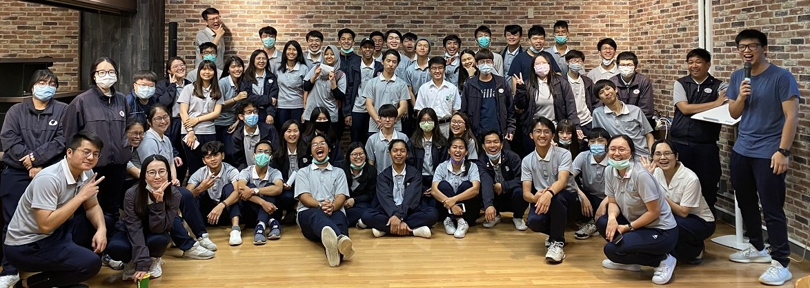

graph/facility-case-room.jpg個案教學研討室Case Study Seminar Room
以翻轉教育理論設計的個案討論環境。A case discussion space designed around flipped-classroom teaching.
以人文為本，以實務為用。我們培育具備職場倫理、創意思考、團隊合作與跨文化視野的商管人才，實踐創新與永續的經營理念。 Grounded in humanity, driven by practice. We educate business professionals with workplace ethics, creative thinking, teamwork, and a cross-cultural outlook, committed to innovative and sustainable management.
慈濟大學經營管理學系結合商管專業與人文教育，課程涵蓋行銷管理、餐飲業管理、行銷企劃與市場分析等領域。本系重視理論與實務並行，透過個案教學、實習場域與專題研究，讓學生在真實情境中學習經營決策。 The Department of Business Management at Tzu Chi University combines professional business education with the humanities. Our curriculum covers marketing management, food and beverage management, and marketing planning and market analysis. Theory and practice go hand in hand: through case teaching, practicum facilities, and capstone projects, students learn to make management decisions in real settings.
本系匯聚來自不同國家的學生，在多元文化的學習環境中建立跨文化溝通能力，並以創新與永續經營為核心理念，培養能回應社會需求、具備責任感的未來經營者。 Students from many countries study together here, building cross-cultural communication skills in a diverse learning community. With innovation and sustainability at our core, we prepare responsible future leaders who can respond to the needs of society.

培育具人文素養與重視職場倫理之商管人才。Developing business professionals with humanistic literacy and a strong commitment to workplace ethics.
培育具創意思考能力之商管人才。Developing business professionals who think creatively.
培育具團隊合作精神之商管人才。Developing business professionals who work effectively in teams.
培育具跨文化視野之商管人才。Developing business professionals with a cross-cultural, global outlook.
graph/facility-case-room.jpg以翻轉教育理論設計的個案討論環境。A case discussion space designed around flipped-classroom teaching.
graph/facility-cafe.jpg外場行銷體驗實習場域，建置高規格專業餐飲與服務設備。A front-of-house practicum space with professional food service and hospitality equipment.
graph/facility-smart-store.jpg建置虛擬情境，讓學生提早適應無人商店的概念。A simulated retail environment that introduces students to unstaffed, smart-store concepts.
graph/facility-intl-business.jpg提供安靜舒適的研習空間。A quiet, comfortable space for study and seminars.
graph/facility-presentation.jpg具備簡報投影等相關影音設備。Equipped with projection and audio-visual equipment for presentations.
graph/facility-mice.jpg會議、獎勵旅遊、大型會議與展覽產業之教學場域。A teaching space for the meetings, incentives, conferences and exhibitions industry.
介紹本系師生、課程與學習場域的影片，將於後續課程拍攝後上架。 A film introducing our students, faculty, courses, and facilities will be added after production in upcoming classes.
graph/department-intro.mp4
從咖啡館經營、專題發表到國際交流，看見經管系學生的實作成果。 From running a café to capstone presentations and international exchange, explore what our students create.